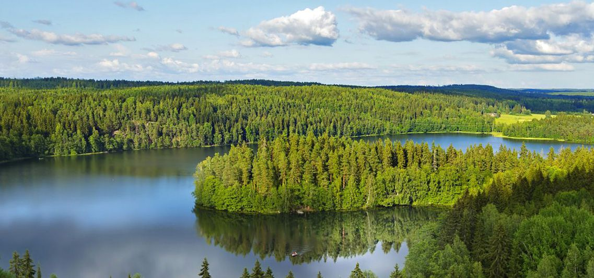
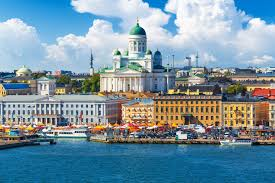
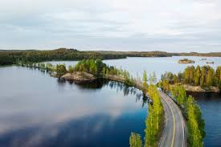
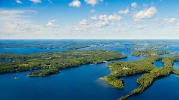
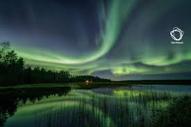

    
| Kivikausi (9000 eaa. – 1700 eaa.) | Viimeisen jääkauden jälkeen jäämassojen vetäytyessä nykyisen Suomen alueelta maa peittyi nopeasti pintakasvillisuudella, mitä seurasivat varpukasvillisuus ja lehtipuut. Näiden jälkeen alueelle levisi mänty, joka levisi koko maahan aina Jäämerelle asti. Lähes kaikki Lapin alueet joilla nykyään kasvaa tunturikoivua olivat kivikauden keskivaiheilla mäntymetsän peitossa. Neoliittisen kauden keskivaiheille 4000-luvulla eaa. asti lämpötila pysyi korkealla ja alueelle saapuivat jalot lehtipuut joita kasvoi aina Oulun korkeudella asti. Lämpimän vaiheen jälkeen lämpötila lähti laskuun saavuttaen viileimmän vaiheen kivikauden lopun ja pronssikauden aikana 2000–500-luvuilla eaa. Tämän viileän kauden aikana myös kuusi levisi Suomeen kivikauden lopulla. Ensimmäiset ihmiset saapuivat Suomen alueelle noin 8850–8400-luvuilla eaa. etelän ja kaakon suunnasta jääkauden loppuvaiheessa Yoldiameren aikaan. He kuuluivat niin sanottujen Kundan, Butovon ja Veretjen kulttuurien yhdistelmän piiriin joka ulottui Baltiasta Ääniselle. Samaan aikaan väkeä saapui Pohjois-Suomeen myös sulana ollutta Norjan rannikkoa pitkin. Suomen asutus on jatkunut keskeytyksettä jääkauden päättymisestä nykyaikaan. Mesoliittisen kivikauden jälkeen Suomi kuului 5200 eaa. alkaen kampakeramiikan alueeseen, joka ulottui Pohjanlahdelta Uralille. Kivikautisten kulttuurien elämäntapa perustui enimmäkseen metsästykseen ja kalastukseen. Mahdollisesti neoliittisen kivikauden lopulla (noin 3200–1500 eaa.) tehtiin silti Suomessakin jo maanviljely- ja karjanhoitokokeiluja. Yleisesti otaksutaan, että suomalais-ugrilaista kieltä on puhuttu Suomen alueella jo jostain kivikauden vaiheesta lähtien, mutta tarkemmasta ajankohdasta on erimielisyyttä, ja myös kivikautta myöhäisempiä ajoituksia on annettu. |
|---|---|
| Pronssikausi (1700 eaa. – 500 eaa.) | Pronssikaudella rannikon väestö oli osa Itämeren laajempaa verkostoa. Sisämaan ihmisten yhteydet olivat pääasiallisesti Keski-Volgalle ja Uralille. Ilmasto jatkoi viilenemistään ja väestö väheni. Yhteisöt olivat pieniä ja arkeologisten löytöjen perusteella työnjakoa ja sosiaalista eriytymistä tai hierarkiaa ei juuri esiintynyt. Väestöä saattoi vähimmillään olla koko rannikolla vain muutamia satoja. Pronssikauden keskivaiheilla väestön koko saattoi kuitenkin olla joitakin tuhansia. Tällöin rakennettiin suurin osa pronssikaudelle tyypillisistä hautaröykkiöistä, joita tunnetaan Suomesta noin 10 000. Sisämaasta asuinpaikkoja tunnetaan runsaammin, lähes kolmesataa. Asuinpaikat olivat pienempiä kuin kivikaudella ja asutus oli liikkuvampaa. Pronssikauden merkittävä kulttuurinen muutos oli ympärivuotisen maatalousasutuksen alkaminen, vaikkakin useimmiten kaskiviljelynä tehtyä viljelyä harjoitettiin pyyntielinkeinojen rinnalla. Viileä ilmasto hidasti uusien elinkeinojen, maanviljelyn ja karjanhoidon, omaksumista. Suomen pronssikauden kulttuureilla oli yhteisiä piirteitä esimerkiksi saviastioissa ja kirveissä, mutta myös paikallisia erityisyyksiä. Pronssikaudella syntyi ja hävisi lukuisia paikallisia materiaalisen kulttuurin perinteitä. Seima-Turbino -ilmiö toi alueelle pronssikauden alussa ensimmäisiä pronssiesineitä, pääasiassa Seiman kirveiksi kutsuttuja pronssikirveitä Länsi- ja Keski-Suomeen sekä Lappiin, sekä mahdollisesti myös uutta väestöä. Seiman kirveiden leviämisen kanssa samanaikaiseti myös suomalais-ugrilaisiin kieliin ja niiden leviämiseen yhdistetyn tekstiilikeramiikan käyttö levisi Suomeen. Rannikon aiemmin pääasiassa Viroon suuntautuneet kauppa- tai lahjaverkostot alkoivat ulottua myös Skandinavian suuntaan, josta Suomesta löydetyt niin sanotut olkakirveet ovat peräisin. Pronssin lisäksi merkittäviä vaihtoartikkeli oli myös asbesti, jota käytettiin astioiden valmistuksessa. Pronssin valmistus levisi Suomen alueelle kahdesta suunnasta: länsirannikolle Skandinaviasta yhdessä muun muassa uuden hautaustavan kanssa, ja maan sisä- ja pohjoisosiin idästä. Kotimainen pronssikirveiden valmistus alkoi niin sanottujen Maaningan- ja Akozino-Mälar-tyypin pronssikirveiden valmistuksen myötä noin 1300 eaa. Pronssia esineiden valmistamiseen tuotiin Volgalta ja Etelä-Skandinaviasta. |
| Rautakausi (500 eaa. – 1200/1300) | Ensimmäiset rautaesineet kulkeutuivat Suomen alueelle noin 800-400 eaa. Rannikolle niitä kulkeutui Itämeren alueelta ja sisämaahan ja Pohjois-Suomeen Ananjino-kulttuurin piiristä idästä pronssikaudella syntyneiden yhteyksien kautta. Varhaisimmat tunnetut todisteet järvimalmin pelkistämisestä ovat Pohjois- ja Itä-Suomesta löydettyjä raudanpelkistysuuneja 300- ja 200-luvuilta eaa. Rannikolta on löydetty merkkejä raudan käytöstä 500-luvulta eaa. lähtien. Rautakauden aikana maanviljely ja karjanhoito yleistyivät ja viimeistään 300-luvulla eaa. siirryttiin paikoin kiinteään peltoviljelyyn. Pyyntielinkeinot olivat kuitenkin vielä tärkeitä. Maatalous kasvatti väestömäärää ja merovingi- ja viikinkiajalla etenkin maan eteläalueiden väestö kasvoi ja asutus levisi Hämeessä ja Savossa. Asutus oli tiheintä Lounais-Suomessa. Vainajia alettiin haudata esineiden kanssa kalmistoihin. Saamen kieli hävisi hiljalleen sisämaasta suomen tieltä. Yhteisöjen hierarkia, taloudelliset ja sosiaaliset erot kasvoivat. Roomalaisella rautakaudella ja kansainvaellusajalla yhteydet Baltiaan ja Skandinaviaan vilkastuivat. Merovingiajan loppupuolelle tultaessa Suomen alueen metalliesinekulttuuri, erityisesti naisten korut ja eri asetyypit, oli kehittynyt omintakeiseksi ja sillä oli kotoperäisiä piirteitä runsaammin kuin milloinkaan aiemmin. Tämän kehityksen pyrkimyksenä oli mahdollisesti tarkoitus ilmaista erityistä ”suomalaista” identiteettiä, joka syntyi mielikuvasta yhteisestä alkuperästä ja keskinäisestä samankaltaisuudesta. Rautakauden alussa Etelä-Suomen rannikolla rakennukset olivat usein pystypaalujen varaan rakennettuja ja avoliedellä varustettuja pyöreitä majoja joiden halkaisija oli 6-7 metriä, joiden seinät olivat paalujen väliin tehtyjä savella tiivistettyä oksa- ja risupunosta. Myös muutamia suorakaiteen muotoisia rakennuksia on löydetty. Kausiluontoisessa pyyntitoiminnassa käytettiin majatyyppisiä tilapäisasumuksia. Rautakauden lopulla käytössä oli nykyisistä hirsimökeistä tuttu hirsisalvostekniikka sekä useita eri uunityyppejä. Itämeren alueen kaukokauppa kasvoi 700- ja 800-lukujen kuluessa. Suomen vientituotteita olivat etupäässä turkikset ja muut erämaan tuotteet, mutta mahdollisesti myös esimerkiksi orjat, hauste, sekä elävänä pyydetyt haukat Euroopan hoveihin. Suomeen puolestaan tuotiin esimerkiksi kankaita, kuten silkkiä, koruja, ulfberth-miekkoja ja vähäisemmässä määrin lasia ja lasihelmiä. Katolisen kirkon ja kristinuskon vaikutuspiiri levisi Suomeen 1000- ja 1100-lukujen kuluessa. Karjalan alueelle ortodoksinen kristinusko levisi idästä 1100-luvun aikana, ja samalla Novgorodin vaikutus kasvoi. |
| Ristiretkiaika (1025/1050 – 1150/1200/1300) | Rautakauden loppua kutsutaan Suomessa ristiretkiajaksi. Se alkaa noin vuonna 1025 tai 1050 ja päättyy Länsi-Suomessa noin 1150 tai 1200 ja Savo-Karjalassa noin 1300-luvulla. Ristiretkiaika oli katolisen kirkon voimakkaan levittäytymisen aikaan. Itämeren etelä-, itä-, ja koillisrannikot olivat vielä 1100-luvun alussa pakanallisia, mutta jo sata vuotta myöhemmin kristinuskosta oli tullut vallitseva uskonto alueiden kansojen joutuessa ulkopuolisten valloittajien alaisuuteen. Saksalaiset ja tanskalaiset olivat osana Baltian ristiretkiä Viron valloituksen yhteydessä aktiivisia myös Suomen rannikolla, vaikka varsinaista jalansijaa he eivät Suomessa koskaan saaneet. Tanskalaiset tekivät Suomeen ristiretket ainakin vuosina 1191 ja 1202. Myös ruotsalaiset tekivät Suomeen keskiajalla sotaretkiä, joita myöhempi historiankirjoitus on osin harhaanjohtavasti kutsunut ristiretkiksi. Niin sanottu ensimmäinen ristiretki tehtiin Lounais-Suomeen ehkä 1150-luvulla, sikäli kuin kyseessä ei ole kuvitteellinen tapahtuma. Toinen ristiretki käynnistyi mahdollisesti vuonna 1238 tai 1249 ja se suuntautui retkestä kertovan Eerikinkronikan mukaan hämäläisiä vastaan. Kolmas ristiretki ja mahdollisesti ainoa todellinen ruotsalaisten tekemä ristiretki Suomeen tehtiin karjalaisia vastaan vuonna 1293. Suomalaiset Moisioiden suurtalonpojat joutuivat uusien vallanpitäjien seurauksena luopumaan asemastaan ja heidän tilansa joutuivat Ruotsin kruunun ja katolisen kirkon omistukseen. Pääasiassa rälssi, josta myöhemmin muodostui aateli, koostui ruotsalaisista ja saksalaisista suvuista. Tilusten rakenteista on päätelty, ettei käytännössä kukaan suomalainen suurtalonpoika päässyt nousemaan rälssiin. Aluksi heidän joukossaan oli muutama suomalainen nimi (Hyvälempi, Mielivalta), mutta nämä katosivat lopulta. |
| Keskiaika (1300–1500) | Suomen historiallisen ajan sekä keskiajan katsotaan alkaneen ensimmäisten kirjallisten lähteiden synnystä. Vanhin tunnettu Suomea koskeva kirjallinen lähde on Gravis admodum -nimellä kutsuttu paavin kirje vuodelta 1171 tai 1172. Katolisen kirkon piispa eli Turun piispa on toiminut Varsinais-Suomessa mahdollisesti 1200-luvun alusta lähtien. Suomen piispa mainitaan ensimmäisen kerran Ruotsin piispojen luettelossa vuonna 1253. Ruotsin ja Novgorodin välinen raja ja samalla Suomen itäraja määriteltiin 1323 Pähkinäsaaren rauhassa. Sen seurauksena Karjala jaettiin Ruotsin ja Novgorodin kesken. Kirkko, ruotsalaisten siirtolaisuus, lainsäädäntö ja hallinto, muun muassa verotus, maakuntalaitos ja linnat, liittivät uudet alueet kiinteämmin osaksi Ruotsia. Turun- ja Hämeen linnaa alettiin rakentaa noin vuonna 1280, Viipurin linnaa tuhotun karjalaisten linnoituksen paikalle 1293 ja vuonna 1300 vihittiin Turun tuomiokirkko. Suomen eli ”Itämaiden” tai "Itämaan” asema Ruotsin valtakunnassa vahvistettiin 1362, jolloin Suomen laamanni sai oikeuden osallistua kuninkaanvaaliin. Suomen hallintoa järjestettiin myöhäiskeskiajalla muun muassa veronkannon turvaamiseksi. Suomi jaettiin linnalääneihin, joista ovat saaneet alkunsa myös historialliset maakunnat. Hallintopitäjistä puolestaan kehittyi paikallishallinto. Keskiajalla Suomeen syntyivät eurooppalainen sääty-yhteiskunta, kaupunkilaitos ja katolinen kirkko-organisaatio. Nelisäätyopin mukaan papisto vastasi yhteiskunnan hengellisistä asioista, aateli vastasi valtakunnan puolustamisesta asein, porvaristo hoiti kauppaa ja yhteiskunnan enemmistö eli talonpojat huolehtivat perustuotannosta. Keskiajalla maanviljelys vakiintuikin pääasialliseksi elinkeinoksi valtaosalle ihmisistä. 1400-luvulla ilmasto lämpeni hetkellisesti ja erityisesti vuosisadan loppu oli lämmintä aikaa. Pääviljana oli ohra, mutta rukiin osuus kasvoi vähitellen. Naudat, lampaat, siat ja vuohet olivat tärkeitä kotitalouseläimiä. Kalan merkitys oli suuri. Turkistalous oli yhä tärkeä tulonlähde vaikkakin sen merkitys keskiajan kuluessä väheni. Keskiajalla kaupankäynti sai vakiintuneempia muotoja. Saksalainen Hansaliitto hallitsi Itämeren kauppaa. Pohjois-Saksan hansakaupunkien ja Suomen välinen kauppa kulki 1300-luvulla pääasiassa Tallinnan kautta. Talonpoikaispurjehdus säilyi Ruotsin kuninkaan asettamista rangaistuksista huolimatta yhtenä kaupankäynnin muotona. Suurin osa keskiajalla käytössä olleesta keramiikasta oli tuontiesineitä Saksasta. Rahan käyttö vakiintui ja rahan lyönti alkoi Turussa 1400-luvun puolivälissä. Kiven käyttö asuinrakentamisessa alkoi. 1300-luvun lopulta 1500-luvulle Suomi kuului Ruotsin mukana Kalmarin unioniin, joka hajosi Kustaa Vaasan aikana. |
| 1500- ja 1600-luvut | Ilmasto alkoi 1500-luvun alussa jälleen viilentyä. 1500-luvun lopulla ja 1600-luvulla monet talot ja kylät autioituivat Etelä-Suomessa. Samaan aikaan suomalaisten asutus levittäytyi Pohjanmaalla ja Savossa uusille alueille. Myös Kainuu sai savolaisperäisen maata viljelevän väestönsä 1500-luvulla. Suomen väkiluku oli 1500-luvulla arviolta 210 000–350 000. Kustaa Vaasan valtakaudella Ruotsiin syntyi vahva keskusvaltio. Reformaatiossa katolinen usko vaihtui Martti Lutherin oppeihin, mikä antoi alkusysäyksen myös suomen kirjakielen kehittämiselle. Suurvalta-aikana Ruotsi onnistui sodissa laajentamaan alueitaan Itämeren ympärillä. Stolbovan rauhassa vuonna 1617 Ruotsiin liitettiin Inkerinmaa ja Käkisalmen lääni, joka käsitti Laatokan- ja Pohjois-Karjalan. 1600-luvulla Suomi kytkettiin hallinnollisesti tiukemmin emämaahan ja ruotsin kielen asema Suomessa vahvistui, kun Ruotsista tuli Suomeen virkamiehiä. Hallintoa kehitettiin: Turkuun perustettiin yliopisto ja hovioikeus, kaupunkilaitosta uudistettiin ja Pietari Brahen aikana maahan perustettiin postilaitos. |
| 1700-luku | Ruotsin asema murentui 1700-luvulla suuressa Pohjan sodassa. Narvan taistelussa vuonna 1700 Ruotsi saavutti voiton, mutta seuraavina vuosina Venäjän keisarin Pietari Suuren onnistui rauhassa vallata Ruotsilta Inkerinmaa. Sota päättyi vasta vuonna 1721 isonvihan, Suomen vuosia kestäneen venäläismiehityksen, jälkeen Uudenkaupungin rauhaan. Sodan aikana Venäjän miehittämänä ollut Suomi palautettiin suurimmaksi osaksi Ruotsille, mutta maan kaakkoisosa liitettiin Venäjään suunnilleen nykyistä rajaa myöten. Hattujen sodassa 1741–1743 Suomea miehitettiin jälleen, ja Ruotsin itäraja siirtyi Kymijoelle. Sodista huolimatta etenkin 1700-luvun jälkipuolisko oli maalle edellisestä vuosisadasta poiketen suhteellisen kehityksen ja vaurastumisen aikaa. |
| Suomen suuriruhtinaskunta | Venäjän tappio Napoleonin sotiin kuuluneessa Friedlandin taistelussa pakotti Aleksanteri I:n neuvottelemaan Ranskan Napoleon Bonaparten kanssa. Vuoden 1807 tehdyssä Tilsitin sopimuksessa Venäjä suostui rauhan ehtona pakottamaan Ruotsin ja Tanskan mukaan Ranskan julistamaan Iso-Britannian mannermaasulkemus-nimellä tunnettuun kauppasaartoon. Ruotsin kuningas ei tähän suostunut ja venäläiset joukot saapuivat helmikuussa 1808 Suomeen. Venäläisten Suomen sodassa valtaamasta suomalaisalueesta muodostettiin Suomen suuriruhtinaskunta vuonna 1809 Porvoon valtiopäivillä. Käsite Suomen suuriruhtinaskunta oli esiintynyt jo Ruotsin vallan aikana, mutta varsinaista hallinnollista merkitystä se alkoi saada vasta nyt. Suomi säilytti Ruotsin vallan aikaisen virallisen kielen, uskonnon sekä lainsäädännön, ja sillä oli Ruotsin valtakauden lopusta poiketen oma hallinto ja oikeusjärjestelmä. Venäjän keskusjohdon ja suomalaisten aloitteellisuuden yhteisvaikutuksesta suuriruhtinaskunnalle muotoutui ajan myötä autonomia, joka laajeni 1800-luvun lopulle asti. Varsinaisesti kaikki Suomea koskevat asiat olivat suoraan Venäjän keisarin alaisuudessa. Vuoden 1809 vallanvaihdosta seurasivat uudistukset: Vanhan Suomen alue liitettiin muuhun Suomeen vuonna 1812, pääkaupunki ja Turun palon jälkeen myös yliopisto siirrettiin Turusta Helsinkiin ja maahan perustettiin senaatti ja keskusvirastoja. Suuriruhtinaskunnan aika oli Suomelle edistyksen aikaa. 1880-luvulta autonomiaa kuitenkin alettiin kaventaa ja kehitys kärjistyi 1900-luvun taitteen sortovuosiin ja Suomen kenraalikuvernööri Nikolai Bobrikovin murhaan. |
| Modernisoituva Suomi | Suomen kehitystä 1850-luvulta eteenpäin leimasivat voimakas väestönkasvu, kansallinen herääminen, teollistumisen tuoma taloudellinen nousu ja uuden hallitsijan, Aleksanteri II:n, myötä syntynyt vapaamielinen ilmapiiri. 1860-luvulta lähtien valtiopäivät saivat kokoontua useiden kymmenien vuosien tauon jälkeen säännöllisesti. 1880-luvulla Suomen säädyt saivat lisäksi lakien esitysoikeuden. Suomen ensimmäinen rautatie valmistui, ja ensimmäinen liikepankki perustettiin 1860-luvulla. Elinkeinojen vapautumisen ja liikenneyhteyksien kehittymisen seurauksena myös muuttoliike ja kaupungistuminen kiihtyivät. Näitä uudistuksia edelsivät oma rahayksikkö, omat postimerkit ja ensimmäinen lennätinlinja sekä oma tullilaitos. Keskeinen osa maan teollistumisessa oli sahateollisuudella, jonka osuus kokonaistuotannosta 1900-luvun toisella vuosikymmenellä oli 35 prosenttia. Käsi kädessä edellä mainitun kehityksen kanssa kulkivat koululaitoksen ja kansansivistyksen voimakas kehittäminen, naisen aseman kohentuminen sekä työväenliikkeen synty. |
| Sortokausista kansallistunteen nousuun | Taiteeseen ja kulttuuriin kehitys toi tullessaan Suomen taiteen kultakauden ja suomenkielisen kirjallisuuden nousun. Tänä aikana suomalaisten keskuudessa syntyi käsitys Suomesta Venäjästä erillisenä valtiona. Tämä johti ristiriitoihin venäläisten kanssa, koska samaan aikaan emämaassa oli menossa päinvastainen kehitys: Venäjän valtiorakenteen yhtenäistäminen ja tiivistäminen. Seurauksena olivat vuosina 1899–1905 ja 1908–1916 suomalaisiin kohdistetut valtakunnallistamis- eli venäläistämistoimet. Suomalaiset ovat kutsuneet näitä, kansakuntaa yhdistäneitä ajanjaksoja sortokausiksi. Ensimmäisen venäläistämiskauden päätti vuoden 1905 suurlakko, jonka seurauksena suomalaiset saivat yleisen äänioikeuden ja kansanedustuslaitoksen, eduskunnan. Tämän seurauksena maahan syntyi nykyaikainen puoluejärjestelmä. Täten myös Suomen poliittinen kehitys alkoi lopulta seurata muuta yhteiskunnassa ilmennyttä nykyaikaistumista. |
| Maaliskuun ja lokakuun 1917 vallankumoukset | Ensimmäinen maailmansota aiheutti Venäjän keisarikunnan sisäisen romahduksen keväällä 1917. Suomi julistautui itsenäiseksi valtioksi 6. joulukuuta 1917. Venäjän hajaannusta oli kuitenkin seurannut vastaava valtatyhjiö sekä oikeiston ja vasemmiston välinen taistelu vallasta Suomessa, jossa kansa oli jakautunut taloudellisesti ja sosiaalisesti kahteen. Lisäksi maassa vallitsi uhkaava elintarvikepula ja Suomessa oli edelleen Venäjän armeijan joukkoja. Järjestysvaltaa hoitamaan oli perustettu keväästä 1917 alkaen järjestyskaarteja, jotka alkoivat jakautua aseistetuiksi työväen järjestyskaarteiksi ja punakaarteiksi ja porvariston suojeluskunniksi (valkokaarteiksi), valtataistelun ja yhteiskunnan hajoamisen seurauksena. |
| Sisällissota – kansan kahtiajakautuminen | Tammikuun 1918 aikana keväästä 1917 lähtien kiihtynyt vastakkainasettelu kärjistyi punaisten ja valkoisten väliseksi sisällissodaksi 27. tammikuuta 1918. Suomi jakaantui Kansanvaltuuskunnan Etelä-Suomea Helsingistä käsin hallitsemaan punaiseen Suomeen ja Suomen Senaatin Keski- ja Pohjois-Suomea Vaasasta käsin hallitsemaan valkoiseen Suomeen. Sisällissodassa valkoiset saivat merkittävää tukea keisarilliselta Saksalta ja punaiset Neuvosto-Venäjän bolševikeilta. Sotaan osallistui vajaat 200 000 suomalaista ja noin 20 000 ulkomaista sotilasta. Suomalaisarmeijoissa merkillepantavaa oli alaikäisten lapsisotilaiden suuri osuus, ja myös naisten osallistuminen sotaan. Valkoiset voittivat sodan. Tämä oli seurausta punakaartien alkeellisesta taistelutaidosta, saksalaisten laatuyksiköiden ja suomalaisjääkäreiden antamasta sotilaallisesta tuesta Vaasan senaatille ja sen käytössä olleista ammattiupseereista, jotka mahdollistivat heikosti koulutettujen suojeluskuntien ja asevelvollisten joukkojen tehokkaamman käytön. Valkoisen armeijan voittoon päättynyt taistelu Tampereen kaupungista ja Saksan armeijan osastojen maihinnousut Hangossa ja Loviisassa sekä saksalaisten suorittama Helsingin valtaus olivat sodan kannalta ratkaisevat tapahtumat. Sodan molemmat osapuolet harjoittivat poliittista terroria yhtenä sodankäynnin muotona. Terrorissa sai surmansa kaikkiaan noin 11 000 – 13 000 uhria. Sodan jälkeen noin 70 000 punaista ja punaiseksi epäiltyä suljettiin vankileireille, valtiorikosoikeuksien tuomittaviksi. Vuoden 1918 sisäisen sodan romahduttaman elintarviketilanteen ja hävinneen osapuolen huonon kohtelun vuoksi leireillä menehtyi kesän 1918 aikana nälkään ja tauteihin (erityisesti espanjantautiin) noin 13 000 henkeä. Sisällissodassa sai surmansa kaikkiaan noin 37 000 ihmistä. |
| Tasavalta vakiintuu | Sisällissodan aikana ja sen jälkeen Suomi liittyi Saksan valtapiiriin. Maaliskuussa 1918 Suomen sotilas- ja kauppapolitiikka oli sidottu Saksaan. Suomea suunniteltiin muutettavaksi kuningaskunnaksi, ja lokakuussa Suomelle valittiinkin saksalainen kuningas Friedrich Karl. Tämä supisti merkittävästi suomalaisten itsenäisyyttä. Ensimmäisen maailmansodan päätyttyä marraskuussa 1918 Saksan tappioon Suomen itsenäisyys toteutui konkreettisesti. Seuraavana vuonna Suomelle vahvistettiin tasavaltainen hallitusmuoto. Maan ulkopolitiikka suuntautui Länsi-Eurooppaan ja Skandinaviaan. Saksalaissuuntauksen päättyminen vahvisti maltillisten väestöryhmien asemaa Suomessa, mikä teki sovinnollisen sisäpolitiikan mahdolliseksi. Merkittävimmät vasemmiston toiveet kuten torpparivapautus, oppivelvollisuuslaki ja uskonnonvapaus toteutuivat vapaamielisten porvarien ja maltillisten sosiaalidemokraattien yhteistyönä. Tasavallan ensimmäiseksi presidentiksi valittu K. J. Ståhlberg vakiinnutti suomalaisen parlamentarismin, jossa eduskunnan lisäksi presidentillä oli tärkeä asema. Ståhlbergin kaudella kahtiajakautunut kansakunta alkoi eheytyä lukuisten sosiaalisten uudistusten ja elintason kasvun ansiosta. |
| Yhteiskunnallinen levottomuus ja heikkenevä turvallisuustilanne | Vuonna 1928 Suomessa alkanut talouslama aiheutti kommunistien ja oikeistoradikaalien voimistumisen. Vahva oikeistoradikaali Lapuan liike vaati kommunistien toiminnan kieltämistä lainsäädännöllä, mikä myös toteutui. Poliittinen kenttä oikeistolaistui, mikä näkyi kokoomuksen Pehr Evind Svinhufvudin valinnassa tasavallan presidentiksi vuonna 1931. Lapuan liikkeen jäsenet sieppasivat ja pahoinpitelivät, eli muiluttivat satoja vasemmistolaisia kesällä 1930. Vuonna 1932 Lapuan liikkeen toiminta huipentui Mäntsälän kapinaan, joka kukistui verettömästi kansan pääosan ja puolustusvoimien annettua tukensa tasavaltaa puolustaneelle presidentti Svinhufvudille. 1930-luvun laman synnyttämä työttömyys kasvatti monin paikoin yhteiskunnallista tyytymättömyyttä. Samoihin aikoihin Euroopan poliittinen tilanne alkoi kiristymään. Suomi alkoi varustautua resursseihinsa nähden melko voimakkaasti ja haki turvaa pohjoismaisesta yhteistyöstä. Sisäpolitiikassa maailmanpoliittinen tilanne näkyi entistä suurempana sovinnollisuutena vasemmiston ja oikeiston välillä. |
| Talvisota | Vuonna 1938 Neuvostoliitto esitti ensimmäisen kerran epävirallisesti alueluovutuksia Karjalan kannaksella. Suomi kieltäytyi ehdottomasti. Seuraavan vuoden syksyllä, kun toinen maailmansota oli alkanut, Neuvostoliitto vaati Suomelta tukikohtaa Hangossa ja alueluovutuksia Kannaksella. Samanlaiset vaatimukset esitettiin myös Baltian maille. Toisin kuin ne, Suomi ei suostunut vaatimuksiin, minkä seurauksena Neuvostoliitto aloitti marraskuun 1939 lopussa talvisodan. Sota päättyi maaliskuussa 1940 rauhansopimukseen, jossa Suomi joutui luovuttamaan laajoja maa-alueita Karjalasta ja Lapin Sallasta. Alueiden väestö evakuoitiin muualle Suomeen. |
| Välirauhasta jatkosotaan ja Lapin sotaan | Välirauhan aikana Neuvostoliiton ja Suomen suhteet säilyivät kireinä. Saksalaisten miehitettyä Norjan Suomi sopi Petsamon nikkelituotannon luovutuksesta saksalaisille, salli saksalaisten joukkojen kuljetukset alueensa läpi ja hankki maasta aseita. Samaan aikaan Neuvostoliitto painosti Suomea vaatimuksilla alueluovutuksista, kauttakulusta ja nikkelituotannosta. Ulkomaankaupan vähyydestä kärsivässä Suomessa Liinahamarin satama Petsamossa oli ainoa vapaa reitti valtamerille. Suomelle ja Saksalle kehittyivät läheiset asevelisuhteet, ja Saksan hyökätessä kesällä 1941 Neuvostoliittoon Suomi aloitti myös hyökkäyksen. Jatkosodassa Suomi valloitti vanhan valtioalueensa takaisin Saksan tuella, sekä miehitti Itä-Karjalan. Pohjois-Suomessa puolustus ja rintamavastuu oli luovutettu saksalaisjoukoille. Kesäkuussa 1944 alkaneen Neuvostoliiton suurhyökkäyksen tuloksena rintamalinja siirtyi kuitenkin lähelle talvisodan rajoja. Presidentti Risto Ryti erosi ja hänen tilalleen nousi sota-ajan ylipäällikkö, Suomen marsalkka C. G. E. Mannerheim. Syyskuussa 1944 Suomen ja Neuvostoliiton välille tehtiin välirauhansopimus, joka edellytti saksalaisten joukkojen häätämistä Suomesta. Jatkosodan jälkeen osa Suomen Neuvostoliitolle menettämistä maa-alueista liitettiin Karjalais-suomalaiseen sosialistiseen neuvostotasavaltaan, osa taas Leningradin ja Murmanskin alueisiin. Jatkosodan jälkeen Suomella oli merkittävä määrä selvitettäviä ongelmia. Saksan kanssa jouduttiin käymään Lapin sota entisten aseveljien karkottamiseksi Lapista. |
| Rauhan tultua | Jatkosodan jälkeen Karjalasta evakuoitu siirtoväki sekä rintamamiehet oli asutettava, minkä vuoksi säädettiin maanhankintalaki. Lisäksi Suomen oli maksettava suuret sotakorvaukset Neuvostoliitolle, mutta toisaalta estettävä Neuvostoliiton vaikutusvallan liiallinen kasvu. Ulkopoliittiseksi linjaksi muodostui Paasikiven–Kekkosen linja. Linja pyrki ottamaan huomioon Neuvostoliiton turvallisuusintressit mutta estämään sen liiallisen vaikutuksen sisäpolitiikkaan. Toisin kuin muissa Neuvostoliiton vaikutuspiiriin jääneissä maissa, kommunistit eivät nousseet valtaan Suomessa, vaikka vaaran vuosina kommunistien vallankaappauksen uhkaa pidettiin todellisena. Merkittävänä syynä oli se, että Neuvostoliitto ei sotilaallispoliittisen kokonaistilanteen vuoksi halunnut tukea suomalaisten kommunistien mahdollisia vallankaappaussuunnitelmia. Kommunistit joutuivat jättämään hallituksen vuonna 1948, Suomi liittyi Pohjoismaiden neuvostoon ja Yhdistyneisiin kansakuntiin vuonna 1955 ja sai Neuvostoliitolle tukikohdaksi vuokratun Porkkalan takaisin vuonna 1956. Toisaalta Suomi joutui vuonna 1948 solmimaan YYA-sopimuksen, joka sitoi Suomen sotilaallisesti Neuvostoliiton vaikutuspiiriin. |
| Kekkosen kausi | Urho Kekkosen pitkän presidenttikauden (1956–1981) aikana Suomi muuttui maatalousmaasta moderniksi teollisuus- ja palveluyhteiskunnaksi. Niinpä maaseutu alkoi autioitua 1960-luvulta alkaen maaseutuväestön muuttaessa teollisuuskeskuksiin ja Ruotsiin. Samalla yhteiskunnan koulutustaso alkoi merkittävästi nousta 1970-luvulla peruskoulujärjestelmään siirtymisen ja korkeakoulutuksen voimakkaan laajenemisen myötä. Taloudellisesti Suomi yhdentyi länteen liittymällä Euroopan vapaakauppajärjestöön ja solmimalla vapaakauppasopimuksen Euroopan yhteisön kanssa. Sisäpoliittisesti Kekkosen pitkä presidenttikausi oli hajanainen. Sitä luonnehti esimerkiksi sosiaalidemokraattien ja sittemmin kommunistien hajaannus. Kekkonen käytti valtaoikeuksiaan täysimittaisemmin kuin kenties kukaan toinen Suomen presidentti. 1970-luvulla Neuvostoliiton vaikutus sisäpolitiikkaan kasvoi. |
| 1980-luvulta syvään lamaan | Mauno Koiviston presidenttikaudella Suomi siirtyi presidenttikeskeisyydestä parlamentaristiseen hallintoon. Samalla itänaapuriin alettiin ottaa varovaisesti etäisyyttä. Suomen ja Neuvostoliiton kahdenvälinen niin kutsuttu clearing-kauppa oli kasvanut merkittävään rooliin Suomen taloudessa 1980-luvun loppuun mennessä. Neuvostoliiton hajotessa Suomen idänkauppa romahti kokonaan loppuvuodesta 1990, mikä yhdessä 1980-luvulla toteutetun rahoitusmarkkinoiden hallitsemattoman vapautuksen kanssa syöksi Suomen syvään taloudelliseen lamaan. Neuvostoliitto jäi velkaa päättyneen clearing-kaupan seurauksena Suomelle, mikä johti useiden suomalaisten suuryritysten yhtäaikaiseen konkurssiin, talouden syvään lamaan ja suurtyöttömyyteen. Ulospääsytieksi lamasta Suomi valitsi talouden voimakkaan vapauttamisen ja entistä tiiviimmän yhdentymisen Eurooppaan. Neuvostoliiton hajoamisen ja Saksan yhdistymisen luomaa tilannetta Koivisto hyödynsi sanomalla irti YYA-sopimuksen sekä Pariisin rauhansopimuksen sotilaalliset, Suomen aseistautumista rajoittaneet artiklat. |
| Kansainvälistyen nousukauteen | 1990-luvun aikana suomalainen yhteiskunta alkoi kansainvälistyä ja Suomessa asuvien maahanmuuttajien määrä kasvoi. Maataloudessa työskentelevän väestönosan määrä laski ja väestöä muutti kaupunkeihin. Laman jälkeisinä vuosina suomalaisissa heräsi suuri usko tietotekniikan voittokulkuun talouden veturina. Vuosien 1999–2000 IT-alan noususuhdanne aiheutti IT-kuplan: osakkeiden arvo kasvoi hurjasti, mutta buumia seurasi romahdus. Kansalaisten tuloerot kasvoivat Suomessa erityisen nopeasti vuosina 1995–2005. |
| Rakennemuutoksesta talouden lamaan | Suomen talouselämän riippuvuus ulkomailla tapahtuvasta tuotannosta lisääntyi koko 2000-luvun ajan. Etenkin metsäteollisuudessa jouduttiin sulkemaan useita tuotantolaitoksia. Koko maailmaan levinnyt talouskriisi lamaannutti Suomen viennin syksyllä 2008 ja seuraavana vuonna Suomen bruttokansantuote väheni 8,5 %. Vaikka bkt:n volyymi on kasvanut 2010-luvun alussa, se oli vuonna 2016 edelleen vuoden 2008 tasoa alempana. |
| Koti | |
| Perustiedot maasta |